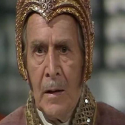

| Home | The Doctors | The Companions | The Villians |
| [Banner goes here] | |||
|
BorusaBorusa is a Time Lord and a former teacher of the Doctor who appears in four serials. Each time, Borusa is portrayed by a different actor, it being implied that the character has regenerated in the time between these serials making his appearance and personality different in each story: The Deadly Assassin - Angus MacKay The Invasion of Time - John Arnatt Arc of Infinity - Leonard Sachs The Five Doctors - Philip Latham When the character is first introduced in The Deadly Assassin, he occupies the post of Cardinal in the High Council, and is portrayed as a good though pretentious person with some political standing on Gallifrey, the Time Lords' home planet. He sets about "adjusting truth" in the wake of the Doctor's return to Gallifrey and his defeat of the Master. He seeks, for instance, to portray the late Chancellor Goth not as the Master's ally, but as a hero who has given his life to stop the Master. After the Doctor willingly leaves Gallifrey again, in the Doctor's absence Borusa officially becomes Lord Chancellor (although the Doctor later—during The Invasion of Time—claims this was done "illegally").
|